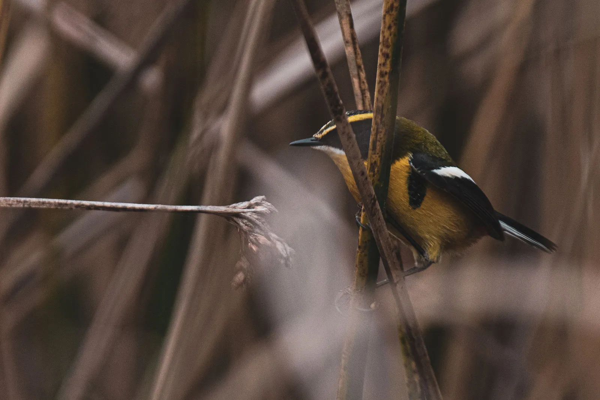

Expediciones · Trekking
Trekking guiados
Descubre a pie los paisajes de la zona y la maravillosa biodiversidad que aquí habita.
Elige cómo vivir tu aventura: en grupo o 100% privada, con toda la atención solo para ti. La opción privada incluye un suplemento del 20%.